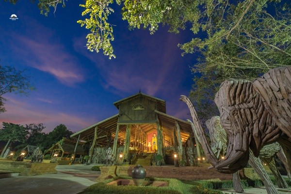

5 สถานที่น่าเที่ยวอำเภอนครชัยศรี
1.ตลาดท่านา (Tha Na Old Market)
ตลาดท่านา
เป็นตลาดที่โดดเด่นด้วยบ้านเรือนโบราณ แบบคลาสสิก หาดูได้ยากในปัจจุบัน เป็นแหล่งช้อปปิ้งย้อนยุค ที่ยังรักษากลิ่นอาย
และร้านอร่อยดั้งเดิมไว้ได้เป็นอย่างดี เต็มไปด้วยของกินอร่อยๆทั้งนั้น
ที่อยู่: ตำบลนครชัยศรี อำเภอนครชัยศรี จังหวัดนครปฐม
เวลาทำการ: 09.00 น. - 17.00 น.
Google Map
2.พิพิธภัณฑ์หุ่นขี้ผึ้งไทย (Thai Human Imagery Museum)
พิพิธภัณฑ์หุ่นขี้ผึ้งไทย
อีกหนึ่งตลาดน้ำชื่อดังแห่งที่เที่ยวนครปฐม “ตลาดน้ำดอนหวาย” และยังเป็นสถานที่สุดฮิตที่คนจะแวะเวียนมาซื้อของฝากและของกินมากมาย
และพร้อมด้วยบรรยากาศตลาดจิงๆ เหมาะสำหรับคนที่ชอบชิม หรือซื้อของกลับไปฝาก มีของขึ้นชื่อโด่งดังมากมาย เช่น ข้าวเหนียวมะม่วง ของฝากอื่นๆ โดยเฉพาะเรื่องเป็ดพะโล้ที่ขึ้นชื่อ และของกินอีกเพียบ
ที่อยู่: 43/2 หมู่ 1 ถนนบรมราชชนนี (ปิ่นเกล้า-นครชัยศรี) กม.31 ตำบลขุนแก้ว อำเภอนครชัยศรี จังหวัดนครปฐม
เวลาทำการ:
วันจันทร์ - วันพฤหัสบดี: 09.00 น. - 17.30 น.
วันศุกร์ - วันอาทิตย์: 08.30 น. - 17.30 น.
Google Map
3.วู้ดแลนด์ เมืองไม้ (Woodland Museum)


วู้ดแลนด์ เมืองไม้
เป็นสถานที่จัดแสดงผลงานไม้แกะสลักมากมาย ซึ่งล้วนแต่เป็นผลงานที่สวยงามทรงคุณค่า หาชมได้ยาก แบ่งเป็นโซนต่าง ๆ อาทิ นิทานเมืองไม้,
หมู่บ้านไทย, รีสอร์ทไม้ เป็นต้น โดยรอบ ๆ ของพิพิธภัณฑ์จะเป็นสวนสีเขียวสุดร่มรื่น มีบริเวณติดกับแม่น้ำท่าจีน บรรยากาศชิลมาก ๆ
ที่อยู่: 15/1 หมู่ 4 ตำบลดอนแฝก อำเภอนครชัยศรี จังหวัดนครปฐม
เวลาทำการ: 09.30 น. - 17.00 น.
Google Map
4.วัดศีรษะทอง (Wat Srisathong)
วัดศีรษะทอง
เป็นวัดที่มีความวัดเก่าแก่ วัดดังแห่งหนึ่งในจังหวัดนครปฐมเลยก็ว่าได้ครับ เต็มไปด้วยความสวยงามของสถาปัตยกรรมไทยแบบดั้งเดิม บรรยากาศเงียบสงบ
อีกทั้งยังมีศาลาการเปรียญและพระพุทธรูปที่งดงาม
ที่อยู่: 22 หมู่ 1 ตำบลศรีษะทอง อำเภอนครชัยศรี จังหวัดนครปฐม
เวลาทำการ: 07.00 น. - 17.00 น.
Google Map
5.วัดกลางบางพระ (Wat Klang Bang Phra)
วัดกลางบางพระ
“วัดกลางบางพระ” โดดเด่นด้วยพระอุโบสถสวยงาม เหมาะสำหรับการมานั่งพักผ่อนและเดินชมรอบๆ วัด บรรยากาศดี เงียบสงบ ทำให้รู้สึกผ่อนคลายได้ดีทีเดียว
อีกทั้งสายมูเตลูยังมากราบไหว้ขอพร หลวงพ่อสมหวัง ด้วย ว่ากันว่า หากมาขอด้วยความตั้งใจก็จะได้สมหวังดั่งชื่อองค์หลวงพ่อเลย
ที่อยู่: 86 หมู่ 4 ตำบลบางพระ อำเภอนครชัยศรี จังหวัดนครปฐม
เวลาทำการ: 07.00 น. - 18.00 น.
Google Map

มหาวิทยาลัยศิลปากร
ชื่อกลุ่ม : Four